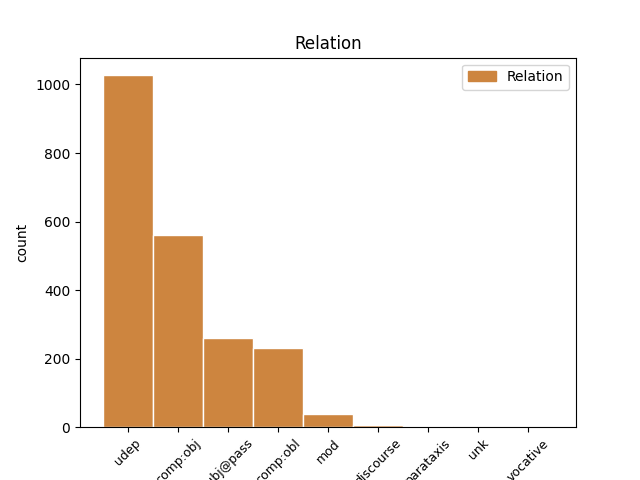
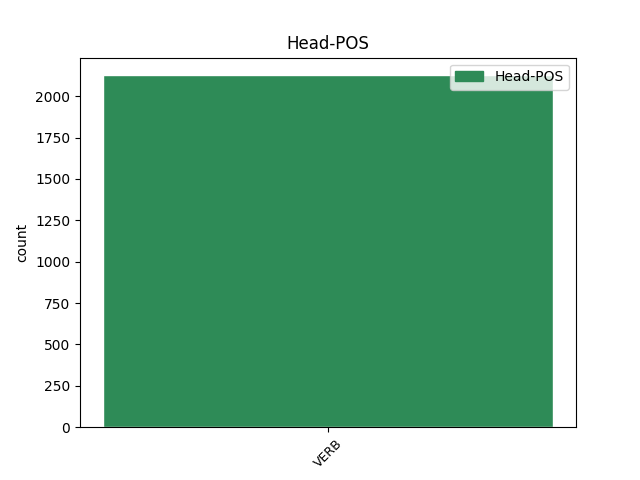
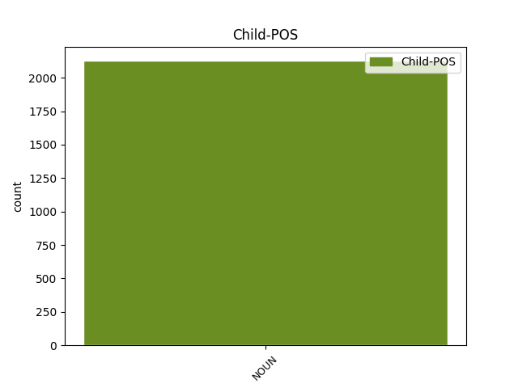

Distribution of features within this leaf



Agreement Rules sorted by frequency.
- When the dependent token is the subject(subj@pass) of the head token, and the head token is VERB and the dependent token is NOUN.
1 Savukārt _ _ _ _ 0 _ _ _
2 , _ _ _ _ 0 _ _ _
3 pieprasot _ _ _ _ 0 _ _ _
4 failu _ _ _ _ 0 _ _ _
5 sistēmas _ _ _ _ 0 _ _ _
6 aģentam _ _ _ _ 0 _ _ _
7 konstatēt _ _ _ _ 0 _ _ _
8 notikumu _ _ _ _ 0 _ _ _
9 " _ _ _ _ 0 _ _ _
10 fails fails NOUN ncmsn1 Case=Nom|Gender=Masc|Number=Sing 11 subj@pass _ LvtbNodeId=a-z98-p30s4w10
11 dzēsts dzēst VERB vmnpdmsnpsnpn Aspect=Perf|Case=Nom|Definite=Ind|Degree=Pos|Gender=Masc|Number=Sing|Polarity=Pos|Tense=Past|VerbForm=Part|Voice=Pass 0 _ _ _
12 " _ _ _ _ 0 _ _ _
13 , _ _ _ _ 0 _ _ _
14 tiek _ _ _ _ 0 _ _ _
15 padota _ _ _ _ 0 _ _ _
16 šī _ _ _ _ 0 _ _ _
17 mainīgā _ _ _ _ 0 _ _ _
18 vērtība _ _ _ _ 0 _ _ _
19 . _ _ _ _ 0 _ _ _
1 VD _ _ _ _ 0 _ _ _
2 minēto _ _ _ _ 0 _ _ _
3 atsevišķu _ _ _ _ 0 _ _ _
4 sieviešu sieviete NOUN ncfpg5 Case=Gen|Gender=Fem|Number=Plur 5 udep _ LvtbNodeId=a-z99-p67s1w4
5 dzemdēto dzemdēt VERB vmnpdmpgpsypn Aspect=Perf|Case=Gen|Definite=Def|Degree=Pos|Gender=Masc|Number=Plur|Polarity=Pos|Tense=Past|VerbForm=Part|Voice=Pass 0 _ _ _
6 bērnu _ _ _ _ 0 _ _ _
7 skaitu _ _ _ _ 0 _ _ _
8 nedrīkst _ _ _ _ 0 _ _ _
9 pārvērtēt _ _ _ _ 0 _ _ _
10 . _ _ _ _ 0 _ _ _
1 Iespējams _ _ _ _ 0 _ _ _
2 , _ _ _ _ 0 _ _ _
3 ka _ _ _ _ 0 _ _ _
4 pazemība _ _ _ _ 0 _ _ _
5 senajā _ _ _ _ 0 _ _ _
6 Izraēlā _ _ _ _ 0 _ _ _
7 tika _ _ _ _ 0 _ _ _
8 pārņemta pārņemt VERB vmnpdfsnpsnpn Aspect=Perf|Case=Nom|Definite=Ind|Degree=Pos|Gender=Fem|Number=Sing|Polarity=Pos|Tense=Past|VerbForm=Part|Voice=Pass 0 _ _ _
9 kā _ _ _ _ 0 _ _ _
10 ierēdņu _ _ _ _ 0 _ _ _
11 tikums tikums NOUN ncmsn1 Case=Nom|Gender=Masc|Number=Sing 8 mod _ LvtbNodeId=a-z99-p160s2w11
12 no _ _ _ _ 0 _ _ _
13 apkārtējām _ _ _ _ 0 _ _ _
14 kultūrām _ _ _ _ 0 _ _ _
15 , _ _ _ _ 0 _ _ _
16 kas _ _ _ _ 0 _ _ _
17 tika _ _ _ _ 0 _ _ _
18 piemērota _ _ _ _ 0 _ _ _
19 Jahves _ _ _ _ 0 _ _ _
20 reliģijai _ _ _ _ 0 _ _ _
21 ( _ _ _ _ 0 _ _ _
22 Jahve _ _ _ _ 0 _ _ _
23 ienīst _ _ _ _ 0 _ _ _
24 visus _ _ _ _ 0 _ _ _
25 augstprātīgos _ _ _ _ 0 _ _ _
26 un _ _ _ _ 0 _ _ _
27 lepnos _ _ _ _ 0 _ _ _
28 ) _ _ _ _ 0 _ _ _
29 . _ _ _ _ 0 _ _ _
1 Ņemot _ _ _ _ 0 _ _ _
2 vērā _ _ _ _ 0 _ _ _
3 veikto _ _ _ _ 0 _ _ _
4 analīzi _ _ _ _ 0 _ _ _
5 , _ _ _ _ 0 _ _ _
6 varam _ _ _ _ 0 _ _ _
7 secināt _ _ _ _ 0 _ _ _
8 , _ _ _ _ 0 _ _ _
9 ka _ _ _ _ 0 _ _ _
10 pedagoģisko _ _ _ _ 0 _ _ _
11 darbinieku _ _ _ _ 0 _ _ _
12 skaitu skaits NOUN ncmsa1 Case=Acc|Gender=Masc|Number=Sing 13 comp:obj _ LvtbNodeId=a-z46-p18s1w12
13 ietekmējošos ietekmēt VERB vmnpdmpaapypn Aspect=Imp|Case=Acc|Definite=Def|Degree=Pos|Gender=Masc|Number=Plur|Polarity=Pos|Tense=Pres|VerbForm=Part|Voice=Act 0 _ _ _
14 faktorus _ _ _ _ 0 _ _ _
15 var _ _ _ _ 0 _ _ _
16 nosacīti _ _ _ _ 0 _ _ _
17 iedalīt _ _ _ _ 0 _ _ _
18 trīs _ _ _ _ 0 _ _ _
19 grupās _ _ _ _ 0 _ _ _
20 – _ _ _ _ 0 _ _ _
21 demogrāfiskie _ _ _ _ 0 _ _ _
22 faktori _ _ _ _ 0 _ _ _
23 , _ _ _ _ 0 _ _ _
24 sociālie _ _ _ _ 0 _ _ _
25 faktori _ _ _ _ 0 _ _ _
26 un _ _ _ _ 0 _ _ _
27 ekonomiskie _ _ _ _ 0 _ _ _
28 faktori _ _ _ _ 0 _ _ _
29 ( _ _ _ _ 0 _ _ _
30 sk. _ _ _ _ 0 _ _ _
31 5. _ _ _ _ 0 _ _ _
32 att. _ _ _ _ 0 _ _ _
33 ) _ _ _ _ 0 _ _ _
34 . _ _ _ _ 0 _ _ _
1 Kāpēc _ _ _ _ 0 _ _ _
2 man _ _ _ _ 0 _ _ _
3 , _ _ _ _ 0 _ _ _
4 brīvību _ _ _ _ 0 _ _ _
5 mīlošam _ _ _ _ 0 _ _ _
6 cilvēkam _ _ _ _ 0 _ _ _
7 , _ _ _ _ 0 _ _ _
8 jābūt _ _ _ _ 0 _ _ _
9 cita _ _ _ _ 0 _ _ _
10 mākslinieka _ _ _ _ 0 _ _ _
11 svītā _ _ _ _ 0 _ _ _
12 un _ _ _ _ 0 _ _ _
13 jābūt _ _ _ _ 0 _ _ _
14 nolemtam nolemt VERB vmnpdmsdpsnpn Aspect=Perf|Case=Dat|Definite=Ind|Degree=Pos|Gender=Masc|Number=Sing|Polarity=Pos|Tense=Past|VerbForm=Part|Voice=Pass 0 _ _ _
15 neveiksmei neveiksme NOUN ncfsd5 Case=Dat|Gender=Fem|Number=Sing 14 comp:obl _ LvtbNodeId=a-p5305-p3s8w15|SpaceAfter=No
16 ? _ _ _ _ 0 _ _ _
1 Pamatojumā _ _ _ _ 0 _ _ _
2 tiesai _ _ _ _ 0 _ _ _
3 jāparāda _ _ _ _ 0 _ _ _
4 , _ _ _ _ 0 _ _ _
5 kā _ _ _ _ 0 _ _ _
6 tā _ _ _ _ 0 _ _ _
7 nonākusi _ _ _ _ 0 _ _ _
8 līdz _ _ _ _ 0 _ _ _
9 lietas _ _ _ _ 0 _ _ _
10 risinājumam _ _ _ _ 0 _ _ _
11 ( _ _ _ _ 0 _ _ _
12 iekšējais _ _ _ _ 0 _ _ _
13 pamatojums _ _ _ _ 0 _ _ _
14 ) _ _ _ _ 0 _ _ _
15 , _ _ _ _ 0 _ _ _
16 un _ _ _ _ 0 _ _ _
17 jāizskaidro _ _ _ _ 0 _ _ _
18 , _ _ _ _ 0 _ _ _
19 kāpēc _ _ _ _ 0 _ _ _
20 tā _ _ _ _ 0 _ _ _
21 devusi dot VERB vmnpdfsnasnpn Aspect=Perf|Case=Nom|Definite=Ind|Degree=Pos|Gender=Fem|Number=Sing|Polarity=Pos|Tense=Past|VerbForm=Part|Voice=Act 0 _ _ _
22 priekšroku _ _ _ _ 0 _ _ _
23 vienam _ _ _ _ 0 _ _ _
24 , _ _ _ _ 0 _ _ _
25 nevis _ _ _ _ 0 _ _ _
26 otram _ _ _ _ 0 _ _ _
27 risinājumam _ _ _ _ 0 _ _ _
28 ( _ _ _ _ 0 _ _ _
29 ārējais _ _ _ _ 0 _ _ _
30 pamatojums pamatojums NOUN ncmsn1 Case=Nom|Gender=Masc|Number=Sing 21 parataxis _ LvtbNodeId=a-z81-p50s1w30|SpaceAfter=No
31 ) _ _ _ _ 0 _ _ _
32 . _ _ _ _ 0 _ _ _
1 Izstādē _ _ _ _ 0 _ _ _
2 apskatāmas _ _ _ _ 0 _ _ _
3 dažādās _ _ _ _ 0 _ _ _
4 tehnikās _ _ _ _ 0 _ _ _
5 darinātas _ _ _ _ 0 _ _ _
6 gleznas _ _ _ _ 0 _ _ _
7 , _ _ _ _ 0 _ _ _
8 kuras _ _ _ _ 0 _ _ _
9 tapušas _ _ _ _ 0 _ _ _
10 kā _ _ _ _ 0 _ _ _
11 pirms _ _ _ _ 0 _ _ _
12 vairākiem _ _ _ _ 0 _ _ _
13 gadiem _ _ _ _ 0 _ _ _
14 , _ _ _ _ 0 _ _ _
15 tā _ _ _ _ 0 _ _ _
16 pēdējai _ _ _ _ 0 _ _ _
17 krāsa krāsa NOUN ncfsn4 Case=Nom|Gender=Fem|Number=Sing 18 unk _ LvtbNodeId=a-p10462-p3s1w17
18 nožuvusi nožūt VERB vmnpdfsnasnpn Aspect=Perf|Case=Nom|Definite=Ind|Degree=Pos|Gender=Fem|Number=Sing|Polarity=Pos|Tense=Past|VerbForm=Part|Voice=Act 0 _ _ _
19 tikai _ _ _ _ 0 _ _ _
20 dažas _ _ _ _ 0 _ _ _
21 dienas _ _ _ _ 0 _ _ _
22 līdz _ _ _ _ 0 _ _ _
23 likšanas _ _ _ _ 0 _ _ _
24 pie _ _ _ _ 0 _ _ _
25 sienas _ _ _ _ 0 _ _ _
26 . _ _ _ _ 0 _ _ _
1 Dienas _ _ _ _ 0 _ _ _
2 Bizness bizness NOUN ncmsn1 Case=Nom|Gender=Masc|Number=Sing 5 discourse _ LvtbNodeId=a-p3747-p1s1w2|SpaceAfter=No
3 : _ _ _ _ 0 _ _ _
4 " _ _ _ _ 0 _ _ _
5 Aizķērušies aizķerties VERB vmypdmpnasnpn Aspect=Perf|Case=Nom|Definite=Ind|Degree=Pos|Gender=Masc|Number=Plur|Polarity=Pos|Reflex=Yes|Tense=Past|VerbForm=Part|Voice=Act 0 _ _ _
6 " _ _ _ _ 0 _ _ _
7 valsts _ _ _ _ 0 _ _ _
8 iestāžu _ _ _ _ 0 _ _ _
9 reģistra _ _ _ _ 0 _ _ _
10 likumi _ _ _ _ 0 _ _ _
Disagree Examples:
1 No _ _ _ _ 0 _ _ _
2 tīra _ _ _ _ 0 _ _ _
3 sudraba _ _ _ _ 0 _ _ _
4 ir _ _ _ _ 0 _ _ _
5 rati _ _ _ _ 0 _ _ _
6 , _ _ _ _ 0 _ _ _
7 no _ _ _ _ 0 _ _ _
8 tīra _ _ _ _ 0 _ _ _
9 zelta _ _ _ _ 0 _ _ _
10 ir _ _ _ _ 0 _ _ _
11 riteņi _ _ _ _ 0 _ _ _
12 , _ _ _ _ 0 _ _ _
13 bet _ _ _ _ 0 _ _ _
14 riteņu _ _ _ _ 0 _ _ _
15 spieķi _ _ _ _ 0 _ _ _
16 mirdz _ _ _ _ 0 _ _ _
17 varā vara NOUN ncfsl4 Case=Loc|Gender=Fem|Number=Sing 18 udep _ LvtbNodeId=a-c15-p10s5w17
18 kalti kalt VERB vmnpdmpnpsnpn Aspect=Perf|Case=Nom|Definite=Ind|Degree=Pos|Gender=Masc|Number=Plur|Polarity=Pos|Tense=Past|VerbForm=Part|Voice=Pass 0 _ _ _
19 . _ _ _ _ 0 _ _ _
1 Eshila _ _ _ _ 0 _ _ _
2 traģēdijā traģēdija NOUN ncfsl4 Case=Loc|Gender=Fem|Number=Sing 3 udep _ LvtbNodeId=a-c15-p36s2w2
3 stāstīts stāstīt VERB vmnpdmsnpsnpn Aspect=Perf|Case=Nom|Definite=Ind|Degree=Pos|Gender=Masc|Number=Sing|Polarity=Pos|Tense=Past|VerbForm=Part|Voice=Pass 0 _ _ _
4 par _ _ _ _ 0 _ _ _
5 Tēbu _ _ _ _ 0 _ _ _
6 valdnieka _ _ _ _ 0 _ _ _
7 Edipa _ _ _ _ 0 _ _ _
8 dēlu _ _ _ _ 0 _ _ _
9 Eteokla _ _ _ _ 0 _ _ _
10 un _ _ _ _ 0 _ _ _
11 Polineika _ _ _ _ 0 _ _ _
12 cīņu _ _ _ _ 0 _ _ _
13 par _ _ _ _ 0 _ _ _
14 varu _ _ _ _ 0 _ _ _
15 . _ _ _ _ 0 _ _ _
1 Sena _ _ _ _ 0 _ _ _
2 ķīniešu _ _ _ _ 0 _ _ _
3 leģenda _ _ _ _ 0 _ _ _
4 vēsta _ _ _ _ 0 _ _ _
5 , _ _ _ _ 0 _ _ _
6 ka _ _ _ _ 0 _ _ _
7 pirms _ _ _ _ 0 _ _ _
8 pieciem _ _ _ _ 0 _ _ _
9 tūkstošiem _ _ _ _ 0 _ _ _
10 gadu _ _ _ _ 0 _ _ _
11 leģendārais _ _ _ _ 0 _ _ _
12 Ķīnas _ _ _ _ 0 _ _ _
13 imperators _ _ _ _ 0 _ _ _
14 Šennongs _ _ _ _ 0 _ _ _
15 nobaudījis nobaudīt VERB vmnpdmsnasnpn Aspect=Perf|Case=Nom|Definite=Ind|Degree=Pos|Gender=Masc|Number=Sing|Polarity=Pos|Tense=Past|VerbForm=Part|Voice=Act 0 _ _ _
16 pasaulē _ _ _ _ 0 _ _ _
17 pirmo _ _ _ _ 0 _ _ _
18 tējas _ _ _ _ 0 _ _ _
19 malku malka NOUN ncfsa4 Case=Acc|Gender=Fem|Number=Sing 15 comp:obj _ LvtbNodeId=a-c2-p4s1w19|SpaceAfter=No
20 . _ _ _ _ 0 _ _ _
1 Kādā _ _ _ _ 0 _ _ _
2 atpūtas _ _ _ _ 0 _ _ _
3 brīdī brīdis NOUN ncmsl2 Case=Loc|Gender=Masc|Number=Sing 16 udep _ LvtbNodeId=a-c2-p4s2w3|SpaceAfter=No
4 , _ _ _ _ 0 _ _ _
5 kad _ _ _ _ 0 _ _ _
6 imperators _ _ _ _ 0 _ _ _
7 sēdējis _ _ _ _ 0 _ _ _
8 zem _ _ _ _ 0 _ _ _
9 tējas _ _ _ _ 0 _ _ _
10 koka _ _ _ _ 0 _ _ _
11 un _ _ _ _ 0 _ _ _
12 dzēris _ _ _ _ 0 _ _ _
13 vārītu _ _ _ _ 0 _ _ _
14 ūdeni _ _ _ _ 0 _ _ _
15 , _ _ _ _ 0 _ _ _
16 sacēlies sacelties VERB vmypdmsnasnpn Aspect=Perf|Case=Nom|Definite=Ind|Degree=Pos|Gender=Masc|Number=Sing|Polarity=Pos|Reflex=Yes|Tense=Past|VerbForm=Part|Voice=Act 0 _ _ _
17 vējš _ _ _ _ 0 _ _ _
18 un _ _ _ _ 0 _ _ _
19 imperatora _ _ _ _ 0 _ _ _
20 krūzē _ _ _ _ 0 _ _ _
21 iepūtis _ _ _ _ 0 _ _ _
22 pāris _ _ _ _ 0 _ _ _
23 tējas _ _ _ _ 0 _ _ _
24 koka _ _ _ _ 0 _ _ _
25 lapas _ _ _ _ 0 _ _ _
26 . _ _ _ _ 0 _ _ _
1 Kādā _ _ _ _ 0 _ _ _
2 atpūtas _ _ _ _ 0 _ _ _
3 brīdī _ _ _ _ 0 _ _ _
4 , _ _ _ _ 0 _ _ _
5 kad _ _ _ _ 0 _ _ _
6 imperators _ _ _ _ 0 _ _ _
7 sēdējis _ _ _ _ 0 _ _ _
8 zem _ _ _ _ 0 _ _ _
9 tējas _ _ _ _ 0 _ _ _
10 koka _ _ _ _ 0 _ _ _
11 un _ _ _ _ 0 _ _ _
12 dzēris dzert VERB vmnpdmsnasnpn Aspect=Perf|Case=Nom|Definite=Ind|Degree=Pos|Gender=Masc|Number=Sing|Polarity=Pos|Tense=Past|VerbForm=Part|Voice=Act 0 _ _ _
13 vārītu _ _ _ _ 0 _ _ _
14 ūdeni ūdens NOUN ncmsa2 Case=Acc|Gender=Masc|Number=Sing 12 comp:obj _ LvtbNodeId=a-c2-p4s2w14|SpaceAfter=No
15 , _ _ _ _ 0 _ _ _
16 sacēlies _ _ _ _ 0 _ _ _
17 vējš _ _ _ _ 0 _ _ _
18 un _ _ _ _ 0 _ _ _
19 imperatora _ _ _ _ 0 _ _ _
20 krūzē _ _ _ _ 0 _ _ _
21 iepūtis _ _ _ _ 0 _ _ _
22 pāris _ _ _ _ 0 _ _ _
23 tējas _ _ _ _ 0 _ _ _
24 koka _ _ _ _ 0 _ _ _
25 lapas _ _ _ _ 0 _ _ _
26 . _ _ _ _ 0 _ _ _